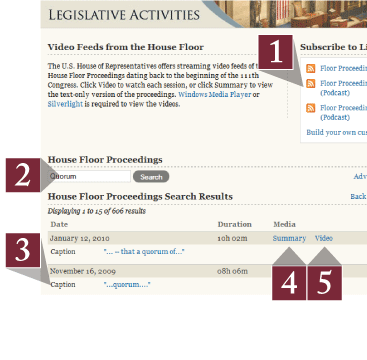
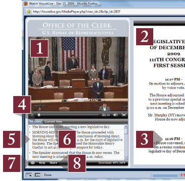

Using HouseLive.gov Archive Search

- Use the “Subscribe” options to create customized RSS Feeds. Subscribe
to a detailed feed that links to our streaming video player, as well as audio- and
video-only options that can be imported to your podcast player of choice.
- Use the basic search box to create keyword searches and find content that you are
looking for quickly and easily. Enter multiple keywords at once to maximize your
search.
- Captions containing your keyword search will also display below each session listing.
Click any of the “Caption” links to go directly to that segment of the
video.
- Click “Summary” to view the text-only Floor Summary from that session.
- Click “Video” to launch the online Streaming Video player.
Using HouseLive.gov Online Streaming Video

- Watch and listen to the proceedings of the House Floor session.
- View the Floor Summary in the same browser while watching the meeting.
- Click the highlighted items in the Floor Summary to jump to that topic in the video
content. (Archived sessions only)
- Click “All Items” to navigate through the session using “Jump-to
Points.” (Archived sessions only)
- Click an item to jump to that point in the session. (Archived sessions only)
- Click “Current Item” to access text related to the item being discussed
in the video. (Archived sessions only)
- Additional help topics are available via the Citizen Help Portal Link.
- Use the “Share” link to email the video, or link it on your social networking
accounts such as Facebook and Twitter.
What you need to Watch the Videos
You will need a computer and broadband Internet connection. To enable the most effective
streaming experience for all browsers and operating systems, be sure you have Windows Media Player or download and install Silverlight from Microsoft. (Read minimum system requirements for
watching archived videos.)
>> More streaming video support